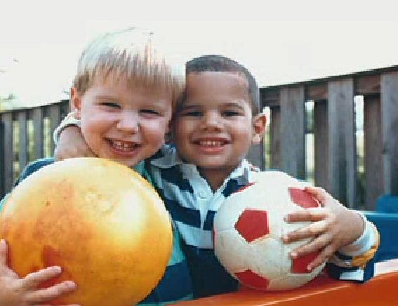
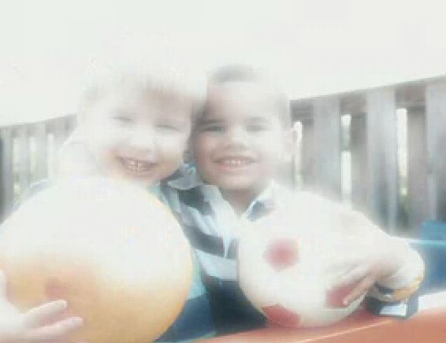
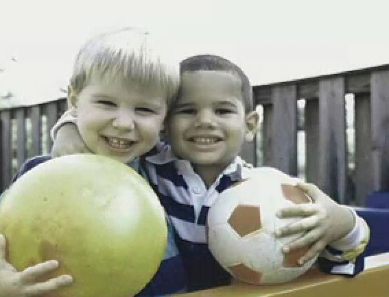
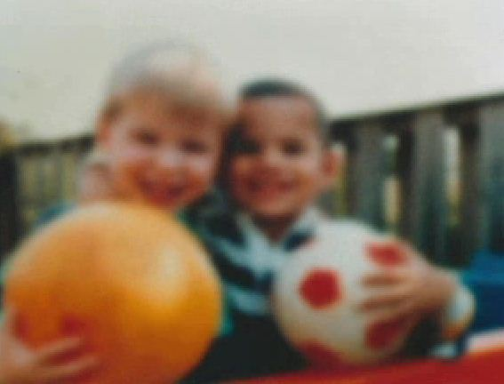
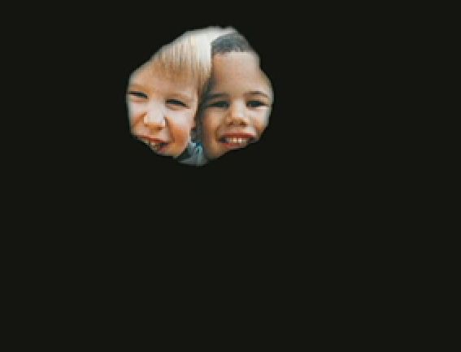
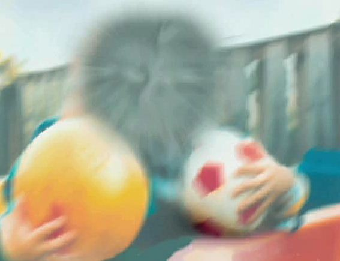
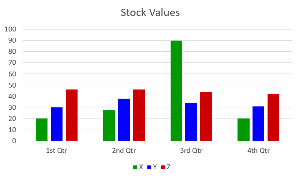
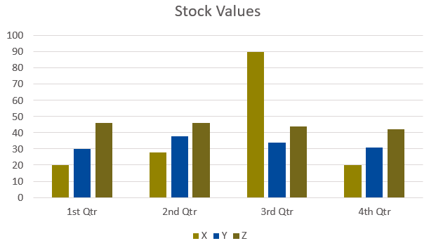
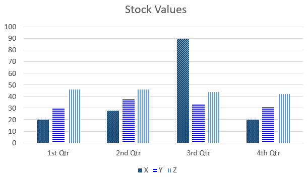

Type of disabilities
Blind
- W3C defines blindness as “
substantial uncorrectable loss of vision in both eyes
” - People who are blind:
- use screen reading software to convert text into speech and/or braille;
- navigate the design using the keyboard;
- either listen to audio description of video or read the transcript;
- rely on properly coded HTML page structures (like lists, headings and tables) and controls (like links, buttons, and form controls) to read and navigate the design and operate its functionality.
Video: Demo of assistive technology – Screen reader
Hadi Rangin is an expert user of screen reader software. In this video, he demonstrates the elements of a well-designed web page and how they sound to someone who is blind. Issues discussed include ARIA landmarks, headings, and text content.
Transcript - Video: Screen reader
>>Sheryl: My name is Sheryl Burgstahler and I direct Accessible Technology Services at the University of Washington in Seattle. Our services also reach out to our branch campuses in Bothell and Tacoma.
>>Hadi: My name is Hadi Rangin and I’m a member of the IT Accessibility Team at the University of Washington.
>>Narrator: Hadi’s an accessibility expert, and he's also a user of accessible technology. He uses a refreshable Braille display and screen reading software that reads everything on the screen.
>>Hadi: I am blind and I use a screen reader program at home and here, everywhere. A screen reader program is software that communicates with the operating system and conveys the information to me.
[screen reader reads fast]
>>Hadi: Even if you are reading as a sighted person, you do not read every content at the same speed. Right? Sometimes you have to make a pause and then review what you have read and then digest the information. For us it's the same thing. When we are reading, for example, normal conversation we can read it very fast.
But when we are reading technical content then we go a little slower. We make more pauses.
>>Screen reader: Accessible University. One.
>>Hadi: I have slowed down my screen reader program.
>>Screen reader: Banner. Heading level one graphic Accessible University. Banner end.
>>Hadi: But if it is, for example, about email I can go...
>>Screen reader: Faster faster faster faster faster
[so fast that audio becomes unintelligible].
>>Hadi: I can go that fast.
>>Narrator: But it’s not enough for Hadi to have a screen reader. Websites must be designed accessibly in order for the screen reader to provide a full experience of the webpage.
>>Hadi: I would like to show you two pages that are visually pretty much consistent, identical. But one of them is accessible. One of them is not accessible. You will see in an inaccessible page how difficult it is when those accessibility features are not present.
>>Hadi: This is the...
>>Screen reader: Accessible University
>>Hadi: This is the accessible version of a fictional university that we have developed here. We call that Accessible University. Here for example, on this accessible page, I can ask my screen reader to show me the major components of the page.
>>Screen reader: Document Regions Dialog. Regions tree view.
>>Hadi: It tells me we have a banner section.
>>Screen reader: Main menu navigation
>>Hadi: We have a main menu section...
>>Screen reader: Main
>>Hadi: And the main body...
>>Screen reader: Apply Now form.
>>Hadi: There is another region...
>>Screen reader: content information
>>Hadi: and content information which is the same as footer section. So assuming the page has been developed correctly, I have good idea about the major components of the page.
>>Hadi: Let me now go to see this page, the inaccessible version of this page.
>>Screen reader: Home Page, Accessible University
>>Hadi: This looks pretty much the same as the other one, the accessible version but here when I ask my screen reader to convey the major components...
>>Screen reader: No region found
>>Hadi: It said "no region found." So for me, practically, I have to read from top to bottom. If those accessibility features are not present, everything has the same weight. So we do not, there is no way for us to say that where a major section starts or where it ends.
It is really not just the fact reading the content, it is also about navigation. We have to discover the page and then that is the most time-consuming problem. Once you know where you are, what you are reading, then it is usually fine.
But the discovery process or navigation process is the most complicated process in an accessibility field. In order to do it I have to read from top to bottom. Whereas in the accessible version, I could easily see what the major components were and then select the desired ones and move to that section quickly.
>>Screen reader: Leaving menus. Heading List dialog. Headings List view.
>>Hadi: Headings is also a means to get information about the structure of the content. It gives me a good understanding, a good overview, about the major or minor components of the content. So I see that here...
>>Screen reader: Welcome 2. Featured Stories Slideshow 2. Accessible University 1.
>>Hadi: Accessible University itself is a Heading 1 and under that we have...
>>Screen reader: Feature Stories.
>>Hadi: Feature Stories, which is Heading 2. It automatically conveys the information that this section is a subsection of the heading above.
You know you will see also that overall get an outline of the page and the major sections of that. That is the difference between accessible and inaccessible.
>>Sheryl: That screen reader can only access the text that's presented on the screen and so if someone just scans in a document and puts an image up on their website that screen reader is not going to be able to read that content.
And so the web developer in that case needs to know to create all their materials so that they're accessible to a screen reader, in other words so they can access the text for that screen reader to read it aloud to a person who's blind.
>>Screen reader: Enter. Message from. Hi All.
>>Sheryl: It’s essential that people with disabilities have access to assistive technology but that’s not the end of the story.
In order for them to be effective users of technology, the technology that other people develop like websites and software and PDF files and so forth must be designed in such a way that they can use it with their assistive technology.
Source: The DO-IT Center [TheDOITCenter]. (2017, October 3). Using a Screen Reader [Video]. YouTube.
Designing for blindness
- Provide equivalent text alternatives for images
- Provide descriptive transcripts or audio description for video
- Do not use colour as the only visual means of conveying information
- Ensure all functionality is operable using a keyboard
- Markup content with good structure and semantics (headings, landmarks, tables, lists, etc)
- Provide name, role and value for custom controls
- Provide users the options to stop, pause, and adjust the volume of audio content (independently of the system volume).
Low vision
- W3C defines low vision as “poor acuity (vision that is not sharp), tunnel vision (seeing only the middle of the visual field), central field loss (seeing only the edges of the visual field), and clouded vision.
- Low vision includes people with cataracts, diabetic retinopathy, glaucoma, hemianopia, macular degeneration, retinal detachment, etc.
-
Vision loss can take many forms and it can be mild or quite extreme. For example, consider this image as seen with normal vision:
 -
Some people have hypersensitivity to glare:
 -
Some people may be colorblind:
 -
Some people may see an entire image, but it might be either blurred or clouded:
 -
while others might see the center of the image often referred to as tunnel vision
 -
And others still might see the edges of the image often called peripheral vision
 - Low contrast causes barriers to interaction, as users may be unable to identify their location on a page, the state of links and controls, read text, or identify the content of images.
- People with low vision may enlarge text or change fonts, colours and spacing to make content more usable for their needs.
- People with a restricted field of view may not enlarge text, but benefit from responsive design (to narrow the display), from related information being grouped together, and from labels and controls being positioned closely to one another.
Video: Demo of assistive technology – Screen magnification
In this video, discover how screen magnification software is used to access the Web, and what Web designers can do to improve access.
Transcript - Video: Screen magnification
Neal Ewers: Many of you watching this have normal vision. Oh sure, you might have to find your reading glasses if you want to read a good book and you might have to make sure there’s enough light around to see it. But for the most part, many of you see rather well. For others, seeing things clearly isn’t quite so easy. For example, how do people with less than perfect vision use the web? What kind of technology is available? And what can web designers do to make their pages easier to use by people who don’t see quite so clearly.
Vision loss can take many forms and it can be mild or quite extreme. For example, some people have hypersensitivity to glare, while others may be colorblind. Some may see an entire image, but it might be either blurred or clouded, while others might see the center of the image often referred to as tunnel vision. And others still might see the edges of the image often called peripheral vision.
Hello, my name is Neal Ewers, and I work for the Trace Research and Development Center, which is a part of the University of Wisconsin-Madison. I too happen to have a vision condition. I am totally blind. I have my friend John Klatt here today. I’ve asked him to come and talk to us about his specific vision condition, and how he uses technology to access the web. Hi John. It’s good to have you.
John Klatt: Hi Neal. Thank you for having me.
Neal: Can you begin by telling us a little bit about who you are, and how you do use technology to access the web?
John: Sure. I’m a graduate student here at U.W. I’m also employed by the University. I have a form of macular degeneration that has taken a good part of my central vision. And although my visual acuity is below 20/200, I’m usually able to use most printed material such as web pages as long as they’re blown up by a power of four. I can show you briefly how I navigate not only computer technology, but specifically the web.
I use a screen enlargement program called ZoomText, and as you can see it enlarges everything on the screen. It makes everything, all of the print nice and big and easy to read. One of the features that I like about ZoomText is that it comes with a couple of different options. One of the problems with having this screen so large is that only a portion of the screen actually fits on to my monitor at one time.
Neal: Ooh!
John: So it’s very easy to kind of become disoriented or lose track of where I am.
Neal: John, the reason I said ooh was the fact that I realized that when you zoom as highly as you can zoom, you must only be able to read one or two or three words at a time and that’s kind of like what happens to me when I use my screen reader which speaks and therefore I only hear one word at a time. So, I would guess that if you had vision low enough to have to have that kind of magnification, it would be really hard to figure out what was on the screen.
John: It can become very difficult, especially as the magnification goes up. I can adjust the magnification so that essentially one word or just two numbers are fitting on the screen and in those situations it becomes very disorienting. One of the ways to get around that problem is to simply switch the function of the magnification. This option is actually like a hand held magnifier where only the portion under the magnifying box actually becomes magnified.
With this option I can actually see the entire document that I’m working on, or the entire web page that I’m working with, but at the same time I can magnify the pieces that I really need to see. On this page, while I can’t see any of the exact text, I can tell that there’s a column of information on the left, there appears to be a column of more detailed information on the right, and up in the right hand corner it looks like there is something. It could possibly be links.
I’m looking for pieces of information that give me context as to what the page is all about. I’m also looking for pieces of information that match the context of the task I’m trying to complete.
Neal: John, can you give us an example?
John: Sure. A couple of months ago I was doing a research project using human subjects in research and this particular page is one that I came to quite often. There are symbols next to each of these links. And each of these symbols represents a different issue in human subject research. And what I found is, after coming to the page a number of times, I no longer had to start to differentiate between the headings and the descriptions of the headings and the various links.
All I needed to do was find the appropriate symbol and click on the link and I could access the page that I wanted. This was a perfect example of how context can actually guide my tasks and can actually facilitate the work that I’m doing.
Neal: John, do you use color at all to figure out how to get around a page?
John: Yeah, actually color is a pretty important element of the page. On the UW home page up in the right hand corner there’s a list of links, and the top row of links is in red and the row of links right below that is in orange. It’s easy to distinguish between these links. I don’t necessarily confuse them as one. The screen magnifier obviously enlarges the text, but it doesn’t necessarily prevent me from making simple mistakes. I’m still not reading it real clearly, and the simple use of color creates a distinction that is very helpful.
Neal: John, you can see color, but there are a number of people who are colorblind. And if for example you went to a page that had stocks, and the green ones were going up and the red ones were going down, you’d be lost.
John: Yeah, I certainly would and you are right, I can distinguish the colors and that’s a big help for me. For those people who are color blind, I know that some magnification software comes with different settings that try to accommodate that. They’ll filter in certain colors and filter out certain colors. You can change the background setting, so there are some things that can be done.
Neal: What about spacing John? Does the spacing of text and other elements on a page help?
John: Yeah it really does. Because of the way the magnification software works, a little extra spacing between lines and a little extra spacing between links actually helps me quite a bit. When pages become too cluttered and there’s too much information packed into a small area, it actually becomes fairly confusing to try to figure out what the text is saying and follow where I am on a page, and honestly sometimes it becomes a little overwhelming.
This UW home page actually contains a great deal of information. There are an awful lot of resources and links to other pages. But as you can see there’s a tremendous amount of space. There’s a lot of space between the lines, the print is nice and big even without the magnification software. Things certainly do not look cluttered, and because of that I find it very easy to use.
Neal: Do you ever use shapes like blocks of text or boxes or any thing like that to help get around.
John: Certainly, shapes are similar to color and space and that they help me understand what’s on the page. Blocks of text, search bars positioned somewhere in the page give me clues as to where to find particular things on the web page. I think that web designers with some careful thought about how they’re using color, shape, and space really help people navigate their task.
Neal: I know that your magnification software can speak as well as magnify and it would seem to me that if you were losing a lot of your vision, being able to hear something and see it at the same time would be really helpful. Can you show us how that works?
John: Sure. The magnification software that I use has something called the Doc Reader. It will read all of the text on the page and at the same time it will put the text on a ticker at the top of the page so you get a chance to hear it as well as see it.
ZoomText Speech Synthesizer: Play button. The University of Wisconsin Madison. UW Search. My UW. Quick links. Timetable. Directories. Employment. Help. News and Events. Events Calendar. UW Madison to require…
John: One of the added benefits of having the text go through the ticker is that all of the text becomes standardized. So if the page has text that’s in a lot of different fonts, or different sizes or if it’s in red and difficult to read, as it goes through the ticker it all becomes one size, it becomes a style of font that’s very easy to read, and it’s white text on a black background.
Neal: That would seem to be awful easy for lots of people with different conditions like colorblindness to use. Can you use that without having it speak?
John: Yes and that’s actually the way I usually use it.
Neal: You mentioned font, John and I know that font size and font family are really important and should be things that web developers keep in mind.
John: Yeah, I think you’re right and font color and background are also important to me.
Neal: Well John, I have to say that you’ve certainly helped me, a person who is totally blind, understand a lot more about what it’s like for you to navigate the web. And if you can show me, a totally blind person, how it is, then you’ve obviously spoken to a lot of other people as well. I really appreciate you being here.
John: Thank you for having me. I had a good time.
Credits:
Additional resources: http://www.doit.wisc.edu/accessibility/video (on each credit page)
Collaborative Production Division of Information Technology DoIT Logo
Collaborative Production Trace Research and Development Center Trace Logo
Collaborative Production Instructional Media Development Center IMDC Logo
Produced under the direction of Alice Anderson Technology Accessibility Program Division of Information Technology University of Wisconsin-Madison
Produced under the direction of Neal Ewers Trace Research and Development Center College of Engineering University of Wisconsin-Madison
Produced under the direction of John Klatt Graduate School University of Wisconsin-Madison
With contributions from: Ben Caldwell Joe Schauer, Kate Vanderheiden Trace Research and Development Center University of Wisconsin-Madison
Produced through the facilities of UW-Madison School of Education Instructional Media Development Center Dick Geier, Director/Editor Tony Halverson Katie Laudon Tokie Ogawa
Music composed and performed by Neal Ewers Ravenswood Productions
Photos of Eye Disease Simulations National Institute on Health National Eye Institutions http://www.nei.nih.gov/photo
Support for this project from National Institute on Disability and Rehabilitation Research (NIDRR) U.S. Department of Education Grant H133E980008
C (copyright) 2003 UW-Madison Board of Regents
Source: The video and simulations of low vision are from the University of Washington DO-IT: UW-Madison Division of Information Technology [ UWDoIT]. (2013, July 29). Screen Magnification and the Web [Video]. YouTube.
Designing for low vision
- Ensure sufficient contrast between text and background colour.
- Ensure the focus and hover state of links, buttons and other controls is visible.
- Provide clear visual distinction between content and controls (e.g. between text and buttons, links, etc).
- Position labels close to their controls.
- Consider using colour to help users differentiate different regions of the page.
Colour-blind
The W3C defines colour blindness as “difficulty distinguishing between colors such as between red and green, or between yellow and blue, and sometimes inability to perceive any color.
”
Barriers for these users manifest anywhere colour alone communicates meaning. For instance, a form indicating required fields with a red label and no asterisk, or a link using blue without any other visual enhancement (an underline, 3:1 contrast with neighbouring text, border, etc.).
In the colour blindness simulation below, the red and green columns of the bar chart are barely distinguishable. The solution here is adding a background pattern, but the bars could also be labelled with visible text.
Simulation of red-green colour blindness
The original image:
Example begins
Example ends
Protanopia (red colour blind) simulation:
Example begins
Example ends
Good example: Using a background pattern
In this example, background patterns are used to identify the three categories x, y and z. Colour is no longer solely communicating the meaning.
Example begins
Example ends
Designing for colour blindness
- Ensure sufficient contrast between text and background colour.
- Do not use colour as the only visual means of conveying information (e.g., associate a text label or introduce a background pattern in addition to colour).
- Ensure links are visually distinguishable from neighbouring text with more than colour.
Deaf
W3 defines auditory disability is a from mild or moderate hearing loss in one or both ears (“hard of hearing”) to substantial and uncorrectable hearing loss in both ears (“deafness”). People with auditory disabilities can’t hear the audio, prefer audio content in another form or in conjunction with captions.
Most of the web is in a visual or text format. It is vital to make audio content accessible to users with a hearing impairment.
Designing for deaf
- Provide captions for video content.
- Provide transcript for video content.
- Provide transcript for audio-only content.
- Provide users the options to stop, pause, and adjust the volume of audio content (independently of the system volume).
Deaf-blindness
People who are Deaf-blind use a screen reader with a refreshable braille display to read, which users feel with their fingers.
People who are deaf-blind can only access multimedia content (audio only, video only, and video with audio) via its transcript. They cannot hear the audio, see the video or read the captions. Audio files need a basic transcript of the audio content, and video files need a descriptive transcript where both the audio and critical visual information is communicated.
Designing for deafblind
- Considerations for blind and deaf users apply, though video captions are inaccessible to braille in most assistive technology.
- Provide basic transcripts of audio files and descriptive transcripts of video files (transcripts that include all audio and all critical visual information).
Braille Device
The braille device is typically situated directly below the keyboard. Screen readers intercept the page content and send the characters to the Braille device.
Motor disabilities
Motor disabilities can refer to a range of physical experiences.
Using a mouse is often not an option. Users may have a temporary inability to use a single hand due to an injury, difficulty using or controlling their hands, little to no motor control of their limbs, or missing limbs/hands.
People with motor disabilities often use alternate keyboards or input devices that act as keyboard emulators. Keyboard emulators include speech recognition software, sip and puff device, on-screen keyboards, scanning software and other assistive technologies.
It’s important to ensure all functionality of the content is operable through a keyboard interface.
Video: Demo of assistive technology – Sip and puff switch
This video demonstrates the Assistive Technology (AT) Sip and Puff Switch. Jared is a young man with cerebral palsy who, with the help of AT, is able to control his entire computer and run his graphic arts business through a sip and puff switch.
Transcript - Video: Sip and puff switch
Hi, I'm Charlotte and I'm Jared's mom.
Jared is an amazing young man. He has a great sense of humor. He loves spending time on the computer and interacting with people around the world and also with us as a family at home.
Jared was born with cerebral palsy and it effects him physically but mentally and intellectually, he's very smart. Jared uses a sip and puff to access his computer.
The sip and puff sends a signal to Jared's environmental control unit on his wheelchair, which sends a signal to the Tash switch, which sends a signal to the Intellikeys switch. The Intellikeys sends a wireless signal to Jared's computer that controls a software program called Switch XS.
Switch XS allows Jared to do anything on his computer by choosing options from a pop up menu that scans through several choices. When he gets to the option he wants, he then uses his sip and puff to make the selection. He can type, control the mouse, and do anything on his computer.
When Jared was in elementary school, we started working with the staff at the school to find technology that would help make him successful and also provide a recreational outlet for him in the computer field.
Jared's technology has changed overtime. When Jared was in grade school, he used the Leaf switch to access the computer. And then we changed when he was in high school to a Jellybean switch, which he would access by hitting with his head.
And now he uses the sip and puff, which has been the best for accuracy for him. Because of his drive to do well, he's able to do what he is today.
Source: PACER Center [pacercenter]. (2013, May 14). Assistive Technology in Action - Meet Jared [Video]. YouTube.
Designing for motor disabilities
- Ensure all functions are available via both mouse and keyboard for those users who may not be able to use the mouse.
- Allow users to remap or disable single key shortcuts.
- For those using voice input software:
- Provide visible link and button text.
- Ensure the visible label matches or is part of the ARIA label, if one exists.
- Provide a minimum response time of 20 seconds before time expires.
- Ensure content works in both horizontal and vertical orientation and do not rely on swiping or dragging.
Speech disabilities
People with speech disabilities have difficulty with producing voice sounds and using muscles in their mouths.
Designing for speech disabilities
- Ensure that an alternative to voice-based services is provided in the form of chats, forms, email, etc.
- If a contact us page has a phone number also provide a text-based means of contact (an email or accessible contact us form).
- Ensure any voice search feature has a text-based search alternative.
Cognitive, learning, and neurological disabilities
Cognitive disabilities are by far the most common type of disability. According to the W3C-WAI, cognitive, learning and neurological disabilities affect any part of the nervous system and impact how well people hear, move, see, speak, and understand information. Cognitive, learning, and neurological disabilities do not necessarily affect the intelligence of a person.
Examples of cognitive, learning, and neurological disabilities
- Attention Deficit Hyperactivity Disorder (ADHD)
- involves difficulty focusing on a single task, focusing for longer periods, or being easily distracted.
- Autism Spectrum Disorder (ASD) (includes “autism,” “Asperger syndrome,” and “
Pervasive Developmental Disorder
” (PDD)) - involves impairments of social communication and interaction abilities, and sometimes restricted habits and interests.
- Intellectual disabilities (sometimes called “learning disabilities” in Europe and some other countries, and “developmental disabilities” in other regions)
- involves impairments of intelligence, learning more slowly, or difficulty understanding complex concepts. Down syndrome is one among many different causes of intellectual disabilities.
- Learning disabilities
- is a functional term rather than a medical condition, and is not uniformly defined. In Europe and some other countries, it refers to intellectual disabilities, while in Australia, Canada, the U.S., and some other countries it refers to perceptual disabilities.
- Mental health disabilities
- includes anxiety, delirium, depression, paranoia, schizophrenia, and many other disorders. These conditions may cause difficulty focusing on information, processing information, or understanding it. In particular, medication for these disorders may have side effects including blurred vision, hand tremors, and other impairments.
- Memory impairments
- involves limited short-term memory, missing long-term memory, or limited ability to recall language. Dementia is one among many different causes of memory impairments.
- Multiple sclerosis
- causes damage to nerve cells in the brain and spinal cord, and can affect auditory, cognitive, physical, or visual abilities, in particular during relapses.
- Neurodiversity
- is a societal rather than medical term to describe the natural diversity in neurocognitive functioning, like gender, ethnicity, sexual orientation, and disability.
- Perceptual disabilities (sometimes called “learning disabilities” in Australia, Canada, the U.S., and some other countries)
- involves difficulty processing auditory, tactile, visual, or other sensory information. This can impact reading (dyslexia), writing (dysgraphia), processing numbers (dyscalculia), or spatial and temporal orientation.
- Seizure disorders
- includes different types of epilepsy and migraines, which may be in reaction to visual flickering or audio signals at certain frequencies or patterns.
Examples of barriers for people with cognitive, learning, and neurological disabilities
- Complex navigation mechanisms and page layouts that are difficult to understand and use.
- Complex sentences that are difficult to read and unusual words that are difficult to understand.
- Long passages of text without images, graphs, or other illustrations to highlight the context.
- Moving, blinking, or flickering content, and background audio that cannot be turned off.
- Web browsers and media players that do not provide mechanisms to suppress animations and audio.
- Visual page designs that cannot be adapted using web browser controls or custom style sheets.
Designing for cognitive, learning, and neurological disabilities
People with cognitive, learning, and neurological disabilities often rely on:
- Clearly structured content that facilitates overview and orientation.
- Consistent labeling of forms, buttons, and other content parts.
- Predictable link targets, functionality, and overall interaction.
- Different ways of navigating websites, such as hierarchical menu and search.
- Options to suppress blinking, flickering, flashing, and otherwise distracting content.
- Simpler text that is supplemented by images, graphs, and other illustrations.
The Canada.ca Style Guide requires that externally-facing content have a grade 8 reading level, and internally-facing content have a grade 10 reading level. A measurement tool, the Flesch-Kincaid Grade Level test, is available in English only in Microsoft Word under the spelling and grammar options. The readability measurement tool www.scolarius.com (in French only) offers a similar metric for French text: a score between 50 and 89 corresponds to the primary level of education, between 90 an 119 at the high school level, 120 and 149 at the college level, from 150 to 189 at the university level.
Seizures
Rapidly flashing lights or strobe-like effects in video, graphics or animation can cause photo-epileptic seizures in users with photosensitive epilepsy. Also known as convulsions, these are a sudden, uncontrolled electrical disturbance in the brain that can cause physical harm.
Flashing lights can trigger a seizure if:
- Lights flash more than 3 times per second.
- The flashing content is large enough. WCAG provides a complex formula here, but the rule of thumb is flashing content larger than 21,824 square pixels is problematic.
- The flashing content has high contrast. WCAG provides another complex formula here, but as an alternative recommends assessing flashing content using a tool such as the Photosensitive Epilepsy Analysis Tool (PEAT).
Because users may magnify the page and so enlarge the flashing area, it’s safest to limit the flashing of any size content to no more than three flashes in any 1-second period
Designing for seizure disorders
- Don't include flashing light sequences of 3 times or more per second in videos, animations, or transitions. If you can’t edit the source, don’t use it.
Reading disabilities
Difficulty reading
- Some people with cognitive disabilities and people with dyslexia have reading difficulties.
- For people with dyslexia, spelling or reading words can be error prone because visual encoding of text is difficult.
Dyslexia simulation
Below is a simulation of the dyslexia reading experience, where letters appear to move and swap places.
Dyslexia simulation
The IT Accessibility Office (ITAO) remains to be a provider of adaptive technology and an advocate for inclusiveness of people with disabilities in the workplace. We are demonstrated leaders, committed to our accessibility mandate, continuing to provide support to employees with disabilities. In accordance with the Accessible Canada Act and in collaboration with our partners in central agencies, we recommend internationally recognized standards, guidelines and best practices.
Designing for reading disabilities
- Don’t communicate solely through text. Supplement text with informative images, videos and audio.
Most information in this article is from the Web Accessibility Initiative (WAI) document: Diverse Abilities and Barriers. Shadi Abou-Zahra, eds. Copyright © 2017 W3C® (MIT, ERCIM, Keio). Status: Updated 15 May 2017.